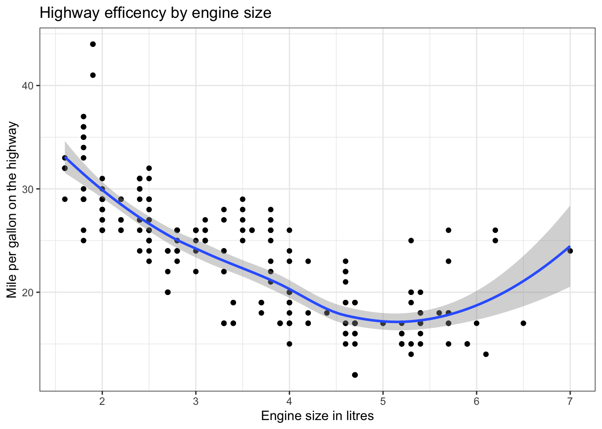
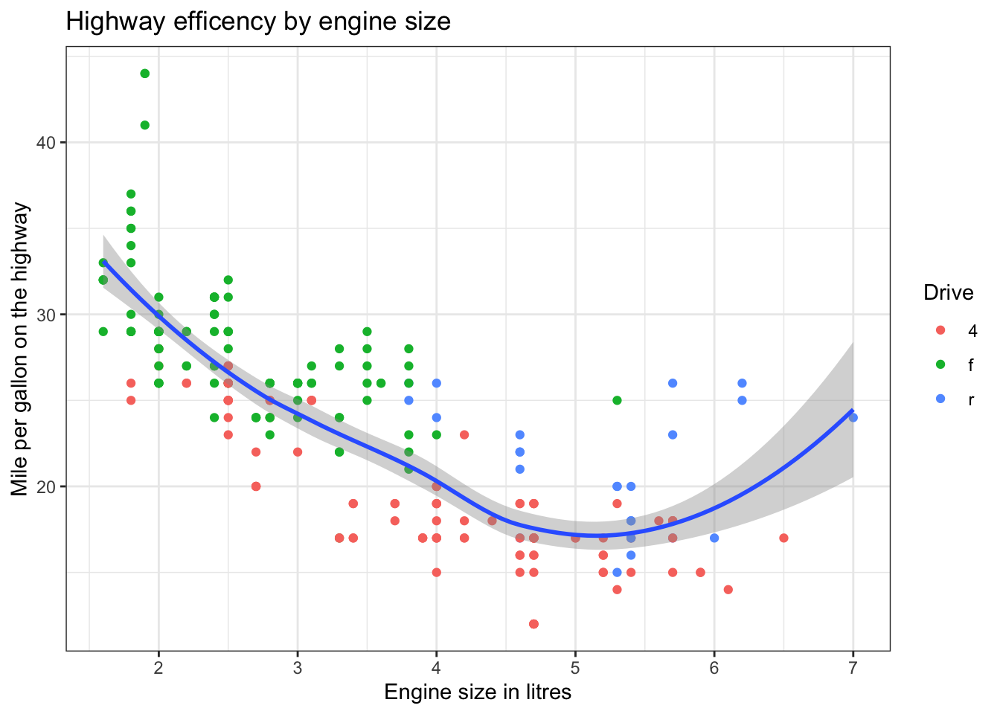

── Attaching packages ─────────────────────────────────────── tidyverse 1.3.2 ──
✔ ggplot2 3.4.0 ✔ purrr 0.3.5
✔ tibble 3.1.8 ✔ dplyr 1.0.10
✔ tidyr 1.2.1 ✔ stringr 1.4.1
✔ readr 2.1.3 ✔ forcats 0.5.2
── Conflicts ────────────────────────────────────────── tidyverse_conflicts() ──
✖ dplyr::filter() masks stats::filter()
✖ dplyr::lag() masks stats::lag()Exploring data visually
There is no better way of letting your data tell its story than through data visualization. This is also an important step in understanding the relationships between variables and developing research questions. We’d put this introduction to data visualization early on in the book because we believe that you’ll find being able to “see” what you are able to do with just a few lines of code, you’ll be motivated to continue with your journey to learn R. The point of this chapter is to get you excited about R. We’ll do some more advanced data visualization later on in the book once you’ve developed some data wrangling skills.
The grammar of graphics
The world of data visualization has been revolutionized with the introduction of ggplot2, an R package that leans on a new of thinking about graphics. The starting point is to understand the “grammar of graphics” - these are the various parameters that need to be included in your code that will translate into meaningful visual characteristics in your plot. The power of this new way of thinking is that it allows you to build a plot, layer upon layer, combining geometry and aesthetics like an artist working on a canvas.
The best way to learn and understand the grammar of graphics is to look at an example. We’re going to take a look at the mpg dataset that contains information about fuel efficiency for a number cars. We’ll start by visualizing the relationship between two variables, namely hwy (highway miles per gallon) and displ (engine displacement - or size of the engine). To plot this relationship we need to define a few things:
what data is being used,
how the two variables are mapped against the x and y axis’ of our plot and
what kind of geometry should ggplot use to represent the data (a bar chart, scatter plot, line graph etc.).
Let’s create the plot and then take a closer look at the code:
ggplot(data = mpg,
mapping = aes(x = displ, y = hwy))+
geom_point()
The three principle elements that have to be defined in any plot are:
- the data that is being used,
- the variables in that data will determine the aesthetics of the plot, and
- the sort of geometry should be applied.
Identifying data:
While ggplot has a “data” argument that allows you to define what data will be used to generate your plot, you can also feed the data directly into ggplot using pipe operators (but more about that later).
Mapping variables to aesthetics:
To tell your data story, you need to specify how variables within the data are mapped to aesthetic features of your plot. The most obvious examples are the x and y axis. You can also map variables to colors, shapes and sizes and other aesthetic qualities as we’ll demonstrate in examples below.
Defining geometry
By defining the geometry you tell R what kind of plot to create (a boxplot, a histogram, a line graph etc.). The beauty of ggplot is that you can create layers of geometry, each with its own aesthetic mapping. Its this feature that sets ggplot apart from other frameworks for data visualization. Once you get used to creating layers, you’ll find a whole world of possibilities suddenly becomes available to you.
Adding a layer
So, without further ado, let’s use one simple line of code to add a layer and superimpose a smoothed linear model with standard errors to demonstrate the relationship between these two variables. To do this you would run this code:
ggplot(data = mpg,
mapping = aes(x = displ,
y = hwy))+
geom_point()+
geom_smooth()`geom_smooth()` using method = 'loess' and formula = 'y ~ x'
Each time we add a + at the end of a line, we’re telling ggplot that we’re going to add another layer or add information about how the plot should look.
Neatening things up
Let’s add some code to change the theme of the plot and add a title and axis’ labels.
ggplot(data = mpg,
mapping = aes(x = displ,
y = hwy))+
geom_point()+
geom_smooth()+
labs(title = "Highway efficency by engine size",
x = "Engine size in litres",
y = "Mile per gallon on the highway")+
theme_bw()`geom_smooth()` using method = 'loess' and formula = 'y ~ x'
The labs function above is for labels and the theme_bw is one of the many built in themes that you can easily add to a plot to clean it up.
Now let’s add a little color to the plot and look at the same data but distinguish between cars of different drives (four wheel drive, front wheel drive, rear wheel drive etc.).
When we define mapping in the ggplot function itself, that mapping applies to all of the geometries that follow. If, however, you want to have a variable mapped against a particular aesthetic in just one geometry, then you can simple add that mapping as an argument in that geometry. Notice in the code below how I’ve mapped the “drives” to color only in the geom_point aesthetic. Also note that I’ve stopped using “data = __” and “mapping = __”. It is taken for granted that the first argument is going to be data and that whenever you define aesthetics, it is for the purpose of mapping.
ggplot(mpg, aes(x = displ, y = hwy))+
geom_point(aes(color = drv))+
geom_smooth()+
labs(title = "Highway efficency by engine size",
x = "Engine size in litres",
y = "Mile per gallon on the highway",
color = "Drive")+
theme_bw()`geom_smooth()` using method = 'loess' and formula = 'y ~ x'Working in the tidyverse
The tidyverse is a collection of packages that work together to expand the vocabulary of the R programming language. Working with the tidyverse packages has become absolutely mainstream within the R programming community and is widely considered ‘best practice’.
In this section, we’ll introduce you to some of the more important ‘verbs’ (or functions) that are used and to an exciting feature called the ‘pipe operator’ that let’s you sting together a series of actions to be applied to a data object.
Selecting columns, filtering rows and arranging your data
In neat and tidy data, each column is a variable and each row is an observation. This may sound obvious but its an extremely important principle that will serve us well through the rest of this book. Note that data doesn’t always come to use a ‘neat and tidy’ - it usually takes a little data wrangling to get the data into shape.
Once your data is imported, you’ll often find that there are many more variables in your dataset than you want. You may want to “select” just the relevant variables. Similarly, there may be observations (or rows) that aren’t relevant to your analysis. You may want to “filter” your observations to create a subset of data that meets certain criteria.
Consider the following dataset:
Name Age Eye_color Occupation
1 Paul 13 Blue Student
2 Sam 14 Brown Student
3 Andrew 17 Blue Student
4 Sarah 65 Green RetiredIf our analysis were to consider the eye color of teenagers, the we would want to select the first three variables (Name, Age and Eye color) and filter the data to include only those aged 11-19), to get something like this:
Name Age Eye_colour
1 Paul 13 Blue
2 Sam 14 Brown
3 Andrew 17 BlueWell, fortunately, if you’re using the tidyverse packages, then there are some very intuitive functions that become available. The first one that we’re going to introduce you to is the “select” function. It does exactly what you think it does. You use it to select the variable you want to work with. Let’s take a look.
Consider the satarwars dataset (another “built it” dataset that you have access to). Before we select the variables that we want to look at, let’s look at the dataset itself using the view function.
view(starwars)We can extract the names of the 14 variables using the names function.
names(starwars) [1] "name" "height" "mass" "hair_color" "skin_color"
[6] "eye_color" "birth_year" "sex" "gender" "homeworld"
[11] "species" "films" "vehicles" "starships" Let’s imagine that we only want to work with the starwars character’s names, height and mass. We start with the select function and then type in the first argument which is the dataset that we’re working with, followed by the names of the variables that you want to include.
select(starwars,name, height, mass)# A tibble: 87 × 3
name height mass
<chr> <int> <dbl>
1 Luke Skywalker 172 77
2 C-3PO 167 75
3 R2-D2 96 32
4 Darth Vader 202 136
5 Leia Organa 150 49
6 Owen Lars 178 120
7 Beru Whitesun lars 165 75
8 R5-D4 97 32
9 Biggs Darklighter 183 84
10 Obi-Wan Kenobi 182 77
# … with 77 more rowsSimilarly, we could filter the data to include only those characters that are taller than 100 cm. We start with the filter function and then type in the first argument which is the dataset that you’re working with, followed by a phrase that describes your selection, like this:
filter(starwars, height > 100)# A tibble: 74 × 14
name height mass hair_…¹ skin_…² eye_c…³ birth…⁴ sex gender homew…⁵
<chr> <int> <dbl> <chr> <chr> <chr> <dbl> <chr> <chr> <chr>
1 Luke Skywa… 172 77 blond fair blue 19 male mascu… Tatooi…
2 C-3PO 167 75 <NA> gold yellow 112 none mascu… Tatooi…
3 Darth Vader 202 136 none white yellow 41.9 male mascu… Tatooi…
4 Leia Organa 150 49 brown light brown 19 fema… femin… Aldera…
5 Owen Lars 178 120 brown,… light blue 52 male mascu… Tatooi…
6 Beru White… 165 75 brown light blue 47 fema… femin… Tatooi…
7 Biggs Dark… 183 84 black light brown 24 male mascu… Tatooi…
8 Obi-Wan Ke… 182 77 auburn… fair blue-g… 57 male mascu… Stewjon
9 Anakin Sky… 188 84 blond fair blue 41.9 male mascu… Tatooi…
10 Wilhuff Ta… 180 NA auburn… fair blue 64 male mascu… Eriadu
# … with 64 more rows, 4 more variables: species <chr>, films <list>,
# vehicles <list>, starships <list>, and abbreviated variable names
# ¹hair_color, ²skin_color, ³eye_color, ⁴birth_year, ⁵homeworldYou might also want your data to be ordered from lightest to heaviest. Again, there is an intuitive function that will do just that, in this case the arrange function. Again, your first argument is the dataset followed by the variable that you want the data to be arranged by.
arrange(starwars, mass)# A tibble: 87 × 14
name height mass hair_…¹ skin_…² eye_c…³ birth…⁴ sex gender homew…⁵
<chr> <int> <dbl> <chr> <chr> <chr> <dbl> <chr> <chr> <chr>
1 Ratts Tyer… 79 15 none grey, … unknown NA male mascu… Aleen …
2 Yoda 66 17 white green brown 896 male mascu… <NA>
3 Wicket Sys… 88 20 brown brown brown 8 male mascu… Endor
4 R2-D2 96 32 <NA> white,… red 33 none mascu… Naboo
5 R5-D4 97 32 <NA> white,… red NA none mascu… Tatooi…
6 Sebulba 112 40 none grey, … orange NA male mascu… Malast…
7 Dud Bolt 94 45 none blue, … yellow NA male mascu… Vulpter
8 Padmé Amid… 165 45 brown light brown 46 fema… femin… Naboo
9 Wat Tambor 193 48 none green,… unknown NA male mascu… Skako
10 Sly Moore 178 48 none pale white NA <NA> <NA> Umbara
# … with 77 more rows, 4 more variables: species <chr>, films <list>,
# vehicles <list>, starships <list>, and abbreviated variable names
# ¹hair_color, ²skin_color, ³eye_color, ⁴birth_year, ⁵homeworldPiping it all together
In each of the examples above, we’ve applied one function to the data and produced an output. That output is a new data object with a new set of parameters and characteristics. What if we wanted to apply all of them? In other words, select, certain variables, filter the rows and arrange the data.
One of the most exciting and powerful features of the tidyverse packages is the ability to take the output of any function and pass it on (or pipe it) to the next function. To do this we use what is called “pipe operators” that look funny but have a very simple meaning. The classic pipe opporator looks like this %>% (so it looks a little like a pipe) and it simple means, “and then”. Let’s take a look:
starwars %>%
select(name, height, mass) %>%
filter(height > 100) %>%
arrange(mass) # A tibble: 74 × 3
name height mass
<chr> <int> <dbl>
1 Sebulba 112 40
2 Padmé Amidala 165 45
3 Wat Tambor 193 48
4 Sly Moore 178 48
5 Leia Organa 150 49
6 Adi Gallia 184 50
7 Barriss Offee 166 50
8 Ayla Secura 178 55
9 Zam Wesell 168 55
10 Luminara Unduli 170 56.2
# … with 64 more rowsYou’ll notice that we didn’t need to define the data object as the first argument for each function. By starting with a dataset and piping it into a function, that function assumes the piped in data object is the first argument. Its output become the data argument for the next function and so on.
Add a few more functions to your tidyverse vocabulary
Rename and reorder variables
Now that you can see how easy it is to send your dataset through a pipeline of functions, let’s add some more very simple and intuitive, yet useful functions to your vocabulary.
We’ll start with rename(). What does this function do? Well, you guessed it, you can use it to rename a variable. In the starwars dataset, you might want to select the variables, name, mass and height but rename “mass” and call it “weight”. Here’s how you do it:
starwars %>%
select(name, mass, height) %>%
rename(weight = mass)# A tibble: 87 × 3
name weight height
<chr> <dbl> <int>
1 Luke Skywalker 77 172
2 C-3PO 75 167
3 R2-D2 32 96
4 Darth Vader 136 202
5 Leia Organa 49 150
6 Owen Lars 120 178
7 Beru Whitesun lars 75 165
8 R5-D4 32 97
9 Biggs Darklighter 84 183
10 Obi-Wan Kenobi 77 182
# … with 77 more rowsNotice that the new name of the variable comes before the equals sign in the rename function. Also notice that when I selected the variables that I was going to work with, I didn’t list them in the order that they existed in the original dataset. Instead, I listed them in the order that I wanted them and that is exactly what I go. So with this code, we’ve renamed and reordered the variables.
Drop missing values
Missing values are usually designated NA in your data (NA stands for Not Available). Well go into a lot of detail in a later chapter as to different strategies that you can adopt when dealing with missing values. For now however, its useful to know that you can drop missing values in the tidyverse with the function drop_na. Let’s take a quick look at the hair_color variable in the starwars data set.
starwars %>%
select(name, hair_color)# A tibble: 87 × 2
name hair_color
<chr> <chr>
1 Luke Skywalker blond
2 C-3PO <NA>
3 R2-D2 <NA>
4 Darth Vader none
5 Leia Organa brown
6 Owen Lars brown, grey
7 Beru Whitesun lars brown
8 R5-D4 <NA>
9 Biggs Darklighter black
10 Obi-Wan Kenobi auburn, white
# … with 77 more rowsNotice the NA values in the hair_color variable. We can remove them very easily with the drop_na() function.
starwars %>%
select(name, hair_color) %>%
drop_na(hair_color)# A tibble: 82 × 2
name hair_color
<chr> <chr>
1 Luke Skywalker blond
2 Darth Vader none
3 Leia Organa brown
4 Owen Lars brown, grey
5 Beru Whitesun lars brown
6 Biggs Darklighter black
7 Obi-Wan Kenobi auburn, white
8 Anakin Skywalker blond
9 Wilhuff Tarkin auburn, grey
10 Chewbacca brown
# … with 72 more rowsWha-la! Now more missing values in the hair_color variable. Note that when you remove missing values, you remove the entire row of data.
Change or create a variable using mutate()
You’ll notice that in the starwars dataset, the height variable contains data in centimeters. If we wanted to change that data into meters we’d need to divide each value by 100. To do this we use the mutate() function. In the code below, you’ll notice that, once again, we’re using the pipe operator to bring the data object into the mutate function (and so we don’t need to define the data argument). The first thing that we must define however is what it is that we’re going to change or create. In this case we’ve said “height”. That means that the existing “height” variable will be overwritten by the mutate function. You’ll see from the next example that we could just as easily create a new variable at this point. In either event, after the equals sign you simple state what the variable of interest needs to be.
starwars %>%
select(name, height) %>%
mutate(height = height/100)# A tibble: 87 × 2
name height
<chr> <dbl>
1 Luke Skywalker 1.72
2 C-3PO 1.67
3 R2-D2 0.96
4 Darth Vader 2.02
5 Leia Organa 1.5
6 Owen Lars 1.78
7 Beru Whitesun lars 1.65
8 R5-D4 0.97
9 Biggs Darklighter 1.83
10 Obi-Wan Kenobi 1.82
# … with 77 more rowsLet’s do the same thing but this time create a new variable called “height_in_m”.
starwars %>%
select(name, height) %>%
mutate(heigh_in_m = height/100)# A tibble: 87 × 3
name height heigh_in_m
<chr> <int> <dbl>
1 Luke Skywalker 172 1.72
2 C-3PO 167 1.67
3 R2-D2 96 0.96
4 Darth Vader 202 2.02
5 Leia Organa 150 1.5
6 Owen Lars 178 1.78
7 Beru Whitesun lars 165 1.65
8 R5-D4 97 0.97
9 Biggs Darklighter 183 1.83
10 Obi-Wan Kenobi 182 1.82
# … with 77 more rowsAdvanced select
The select function has a few interesting tricks up it’s sleeve. For example, we can select variables that starts with with a certain string of characters.
starwars %>%
select(name, starts_with("s"))# A tibble: 87 × 5
name skin_color sex species starships
<chr> <chr> <chr> <chr> <list>
1 Luke Skywalker fair male Human <chr [2]>
2 C-3PO gold none Droid <chr [0]>
3 R2-D2 white, blue none Droid <chr [0]>
4 Darth Vader white male Human <chr [1]>
5 Leia Organa light female Human <chr [0]>
6 Owen Lars light male Human <chr [0]>
7 Beru Whitesun lars light female Human <chr [0]>
8 R5-D4 white, red none Droid <chr [0]>
9 Biggs Darklighter light male Human <chr [1]>
10 Obi-Wan Kenobi fair male Human <chr [5]>
# … with 77 more rowsnames(starwars) [1] "name" "height" "mass" "hair_color" "skin_color"
[6] "eye_color" "birth_year" "sex" "gender" "homeworld"
[11] "species" "films" "vehicles" "starships" We can also select variables that end with a certain string of characters.
starwars %>%
select(name, ends_with("color"))# A tibble: 87 × 4
name hair_color skin_color eye_color
<chr> <chr> <chr> <chr>
1 Luke Skywalker blond fair blue
2 C-3PO <NA> gold yellow
3 R2-D2 <NA> white, blue red
4 Darth Vader none white yellow
5 Leia Organa brown light brown
6 Owen Lars brown, grey light blue
7 Beru Whitesun lars brown light blue
8 R5-D4 <NA> white, red red
9 Biggs Darklighter black light brown
10 Obi-Wan Kenobi auburn, white fair blue-gray
# … with 77 more rowsYou can select a range of data but referencing the number of the columns.
starwars %>%
select(1:3)# A tibble: 87 × 3
name height mass
<chr> <int> <dbl>
1 Luke Skywalker 172 77
2 C-3PO 167 75
3 R2-D2 96 32
4 Darth Vader 202 136
5 Leia Organa 150 49
6 Owen Lars 178 120
7 Beru Whitesun lars 165 75
8 R5-D4 97 32
9 Biggs Darklighter 183 84
10 Obi-Wan Kenobi 182 77
# … with 77 more rowsThe select() function can also be used to rename a variable. Take a look at this example.
starwars %>%
select(character = name, height, mass)# A tibble: 87 × 3
character height mass
<chr> <int> <dbl>
1 Luke Skywalker 172 77
2 C-3PO 167 75
3 R2-D2 96 32
4 Darth Vader 202 136
5 Leia Organa 150 49
6 Owen Lars 178 120
7 Beru Whitesun lars 165 75
8 R5-D4 97 32
9 Biggs Darklighter 183 84
10 Obi-Wan Kenobi 182 77
# … with 77 more rowsThere are many more features built into the select() function that you’ll be able explore as you become a more advanced tidyverse operator.
Advanced filter
The filter function asks a question of each observation, “Does THIS observation meet a certain requirement”. If the answer is “yes” then that row of data stays. If the answer is “no” then that row of data is removed. The requirement can be pretty sophisticated. Using Boolean logic (and, or, not etc.) you can extract out the data you want with a high level of precision. Let’s look at some examples.
starwars %>%
select(name, hair_color, eye_color) %>%
filter(hair_color == "black" & eye_color == "blue")# A tibble: 2 × 3
name hair_color eye_color
<chr> <chr> <chr>
1 Luminara Unduli black blue
2 Barriss Offee black blue names(starwars) [1] "name" "height" "mass" "hair_color" "skin_color"
[6] "eye_color" "birth_year" "sex" "gender" "homeworld"
[11] "species" "films" "vehicles" "starships" Note the use of the double equals (“==”) in the code. This is used because we’re not stating that one side the equation is equal to the other (that is normally the case with the equals sight) but rather asking if they are equal.
By using the “&” operator, we’re telling the filter function that both criteria must be met in order for a row to be included in out dataset. In this case, there were only two characters who met BOTH the criteria that their hair be black AND their eyes be blue.
If however, we had used “|” (which is used to mean OR), the observations will be included if they meet either of the criteria. Let’s take a look.
starwars %>%
select(name, hair_color, eye_color) %>%
filter(hair_color == "black" | eye_color == "blue")# A tibble: 30 × 3
name hair_color eye_color
<chr> <chr> <chr>
1 Luke Skywalker blond blue
2 Owen Lars brown, grey blue
3 Beru Whitesun lars brown blue
4 Biggs Darklighter black brown
5 Anakin Skywalker blond blue
6 Wilhuff Tarkin auburn, grey blue
7 Chewbacca brown blue
8 Jek Tono Porkins brown blue
9 Boba Fett black brown
10 Lando Calrissian black brown
# … with 20 more rowsIn this case, each observation meets one or both of the stated criteria (and so many more rows are eligible to be included.
You can ask R to give you the compliment (or opposite) of a particular argument using “!”. Let’s see if we can ask for all of the observations that do NOT have black hair.
starwars %>%
select(name, hair_color) %>%
filter(hair_color != "black")# A tibble: 69 × 2
name hair_color
<chr> <chr>
1 Luke Skywalker blond
2 Darth Vader none
3 Leia Organa brown
4 Owen Lars brown, grey
5 Beru Whitesun lars brown
6 Obi-Wan Kenobi auburn, white
7 Anakin Skywalker blond
8 Wilhuff Tarkin auburn, grey
9 Chewbacca brown
10 Han Solo brown
# … with 59 more rowsA very nifty feature of select is that you can ask for a number of values for a particular variable to be included. If we wanted, for example, to include all rows that include black hair OR brown hair OR blond hair, we’d use the %in% feature followed by a list.
starwars %>%
select(name, hair_color) %>%
filter(hair_color %in% c("black", "brown", "blond"))# A tibble: 34 × 2
name hair_color
<chr> <chr>
1 Luke Skywalker blond
2 Leia Organa brown
3 Beru Whitesun lars brown
4 Biggs Darklighter black
5 Anakin Skywalker blond
6 Chewbacca brown
7 Han Solo brown
8 Wedge Antilles brown
9 Jek Tono Porkins brown
10 Boba Fett black
# … with 24 more rowsGrouping and summarizing you data
The group_by() and summarise() functions usually get used together. Let’s consider three variables of the starwars dataset.
starwars %>%
select(name, sex, height) %>%
filter(sex == "male" |
sex == "female") %>%
drop_na()# A tibble: 72 × 3
name sex height
<chr> <chr> <int>
1 Luke Skywalker male 172
2 Darth Vader male 202
3 Leia Organa female 150
4 Owen Lars male 178
5 Beru Whitesun lars female 165
6 Biggs Darklighter male 183
7 Obi-Wan Kenobi male 182
8 Anakin Skywalker male 188
9 Wilhuff Tarkin male 180
10 Chewbacca male 228
# … with 62 more rowsWhat we’re interested in is the average height for males and females. To make that calculation, we’d need to put the data into two groups (male and female), in other words, group by the sex variable and we’d need to apply the “mean()” function to all of the height data in each group. Here is how to do just that.
starwars %>%
select(name, sex, height) %>%
filter(sex == "male" |
sex == "female") %>%
drop_na() %>%
group_by(sex) %>%
summarise('Average height' = mean(height))# A tibble: 2 × 2
sex `Average height`
<chr> <dbl>
1 female 169.
2 male 179.We can quite easily add additional summary values like max, min, median etc. For example…
starwars %>%
select(name, sex, height) %>%
filter(sex == "male" |
sex == "female") %>%
drop_na() %>%
group_by(sex) %>%
summarise('Average height' = mean(height),
'Tallest character' = max(height),
'Shortest character' = min(height))# A tibble: 2 × 4
sex `Average height` `Tallest character` `Shortest character`
<chr> <dbl> <int> <int>
1 female 169. 213 150
2 male 179. 264 66